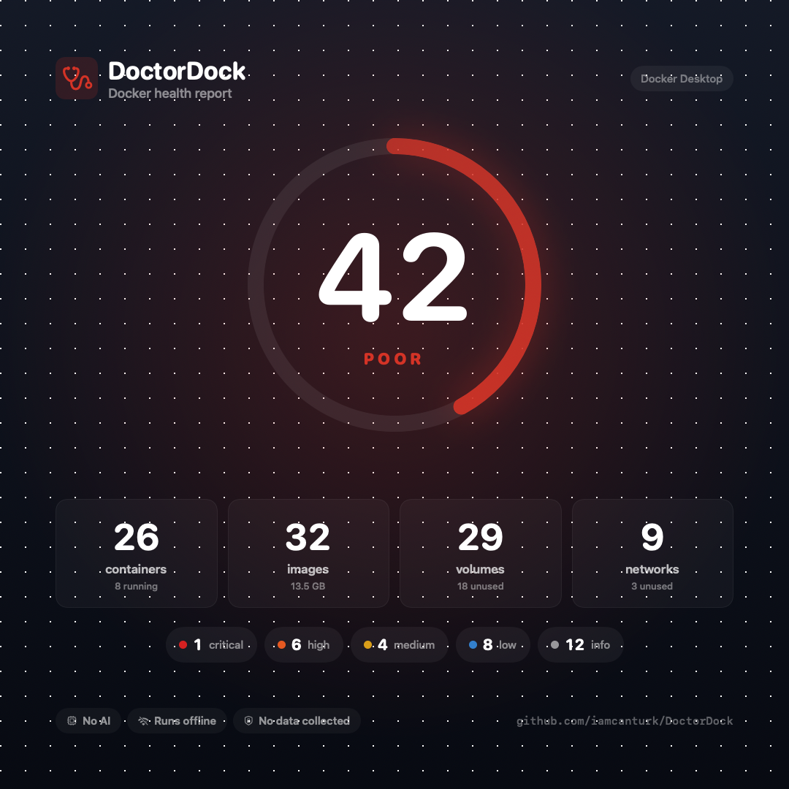

No AI, ever
Every finding is deterministic code you can read. The same environment always produces the same output. No hallucinations, no surprises.
Find the security problems, misconfigurations and wasted disk in your Docker environment — in under a second, entirely offline.
brew install iamcanturk/tap/doctordock

Six months in, the average machine has a container mounting the Docker socket, three databases open to the network, a dozen containers running as root, and gigabytes of images nothing uses. DoctorDock finds all of it.
Every finding is deterministic code you can read. The same environment always produces the same output. No hallucinations, no surprises.
Zero network calls. No CVE feed to sync, no account, no update check. It opens exactly one local socket — Docker's — and nothing else.
Container environment variables are read as key names only. A value can't reach a report, so scans are safe to run against production.
A full scan of dozens of containers and images takes under a second. Fast enough to run dozens of times a day, or in CI on every push.
Reclaim gigabytes of unused images and networks. Nothing is removed without --apply, and a volume is never touched without asking twice.
JSON output and opt-in exit codes. Gate a deploy with doctordock scan --fail-on high — 0 clean, 2 for HIGH, 3 for CRITICAL.
Pick your platform. Both doctordock and the short alias ddock are installed.
brew install iamcanturk/tap/doctordock
scoop install doctordock
npx doctordock
docker run … ghcr.io/iamcanturk/doctordock
go install github.com/…/doctordock@latest
doctordock
Security, configuration, resources and cleanup. Every rule explains itself — what it means, why it matters, and how to fix it.
No AI to send your data to, no server to phone home, no account to create. DoctorDock reads the local Docker socket and writes to your terminal. That's the whole system. The shareable card carries only aggregate numbers — never a container name, an image tag, a port or a path.